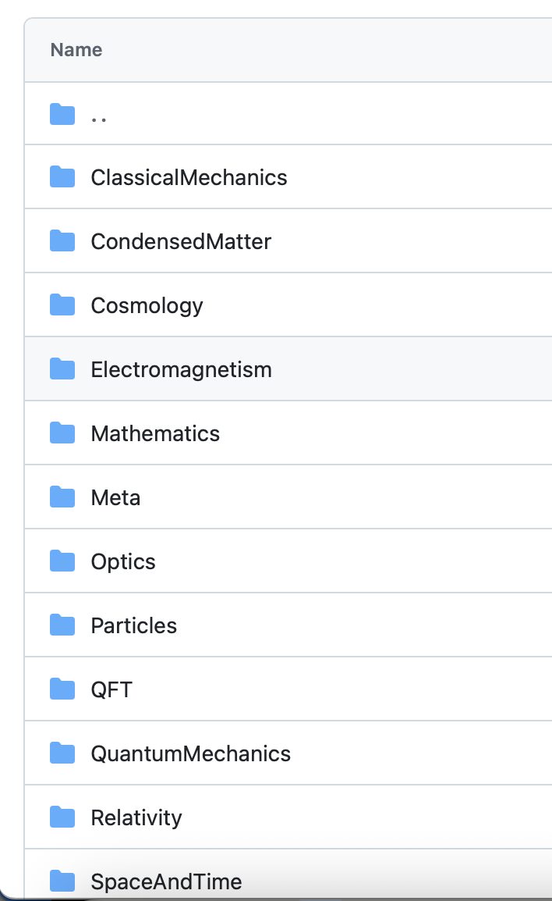
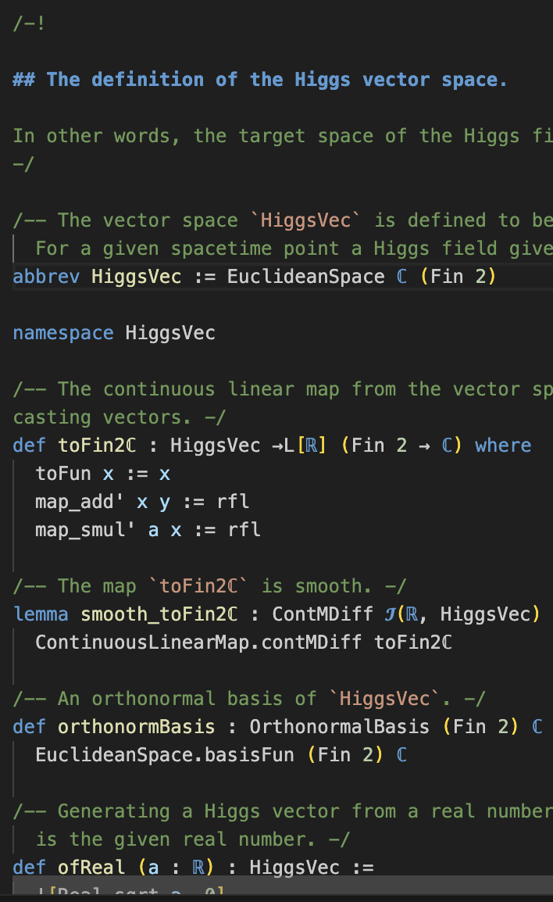
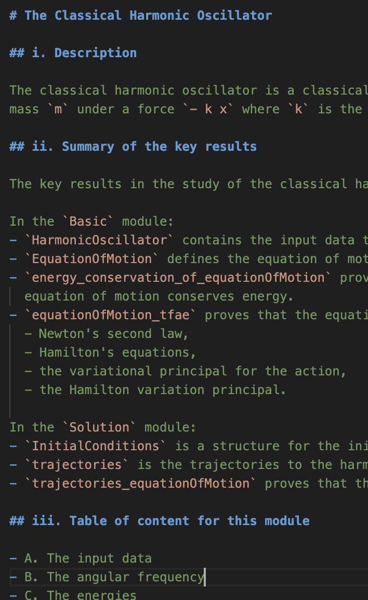
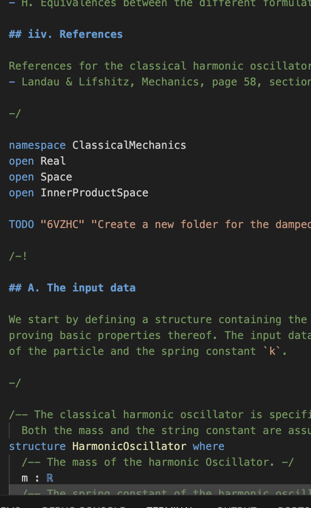
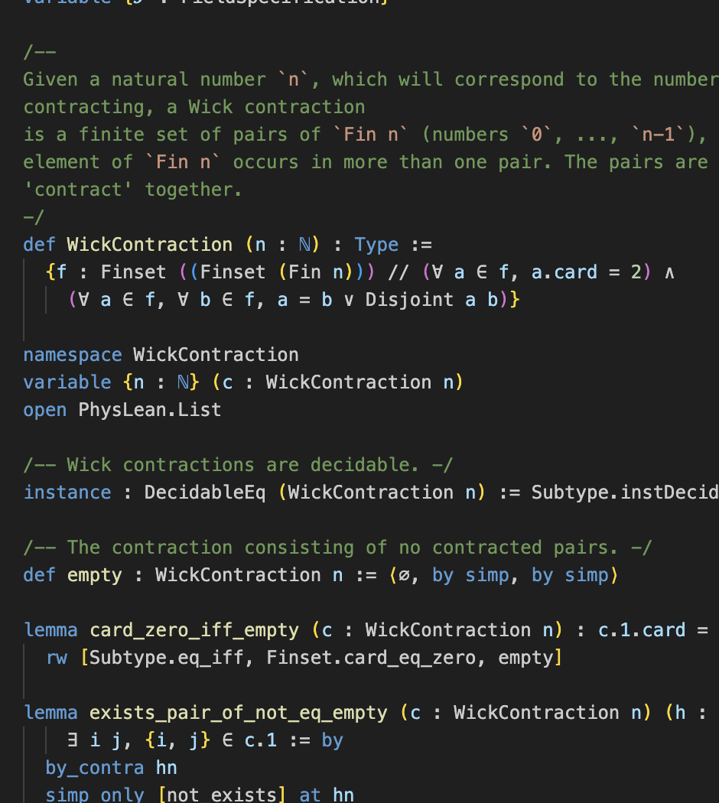
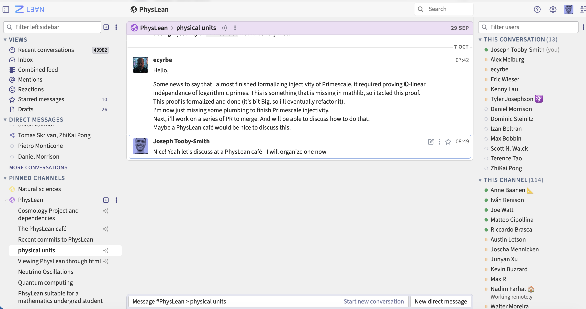
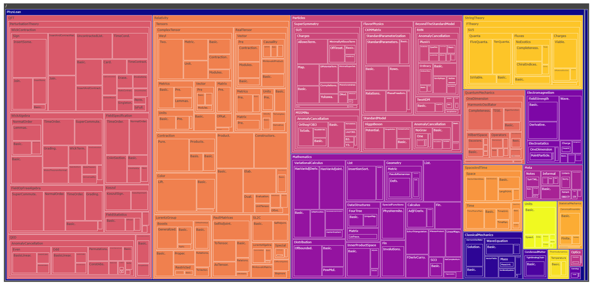

Kepler conjecture (Hales' proof)
Prime number theorem
Four color theorem
Jordan Curve theorem
Odd order theorem
— Google DeepMind





Click a file on the left to see code.


Image credit: Shlok Vaibhav
Click a file on the left to see code.